Акты испытаний и опробований для ОВ (опрессовка, промывка, ПНР и другие)

Испытания и опробования инженерных систем – это важный этап ввода в эксплуатацию систем. Эти мероприятия позволяют проверить работоспособность оборудования, выявить возможные дефекты и убедиться в соответствии системы проектным и нормативным требованиям.
Виды испытаний систем ОВ
1. Продувка или промывка трубопроводов
Продувка или промывка трубопроводов проводится для очистки труб от мусора, пыли, остатков монтажных материалов и других загрязнений, которые могли попасть внутрь во время строительства.
Основные этапы продувки:
- Подготовка системы,
- Подача воздуха или воды.
- Проверка чистоты.
По результатам проведения продувки или промывки составляется Акт промывки (продувки) системы по форме СП 347.1325800.2017 приложение Е.
Пример заполнения акта:
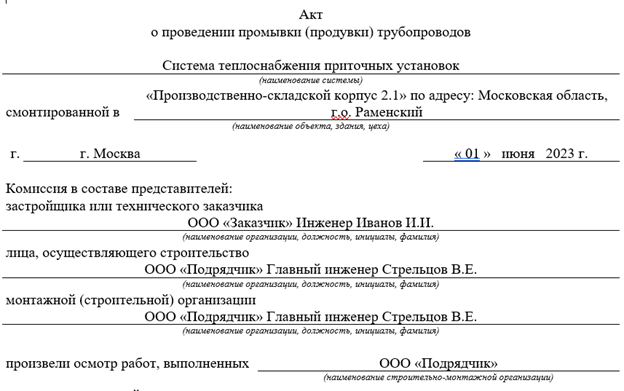
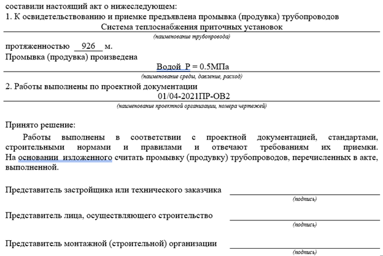
2. Гидравлические испытания (опрессовка)
Гидравлические испытания проводятся для проверки герметичности трубопроводов систем отопления, теплоснабжения и кондиционирования, а также их способности выдерживать расчетное давление.
Основные этапы гидравлических испытаний:
- Наполнение системы водой или антифризом.
- Создание избыточного давления с помощью насосного оборудования.
- Наблюдение за системой на предмет протечек, деформаций или падения давления.
По результатам испытаний составляется «Акт гидростастатического или манометрического испытания на герметичность» по форме СП 73.13330.2016 приложение В. Акт оформляется на участок трубопровода или систему в целом.
Пояснения к заполнению акта:
- В наименовании системы необходимо указать маркировку системы (при наличии). Если испытание проводится на участке трубопровода, то необходимо указать местоположение участка (в каких осях, отметках).
- Дата гидравлического испытания должна быть позже проведения промывки трубопровода и до монтажа теплоизоляции (при наличии).
- Согласно СП 73.13330.2016 испытания проводят под давление равным 1,5 рабочего давления, но не менее 0,2 МПа. Рабочее давление, как правило, прописано в проектной документации. Время проведения испытания не менее 5 минут. Падение давления не должно превышать 0,02 МПа.
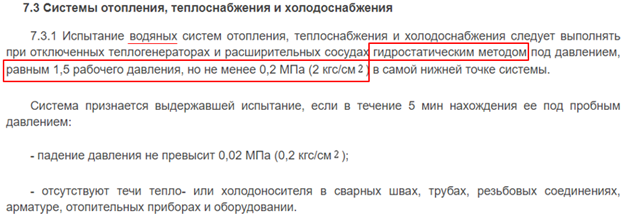
Пример заполнения акта:
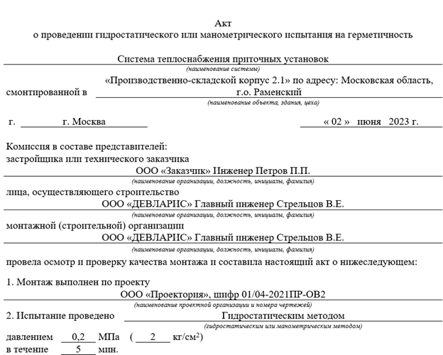
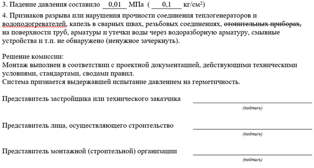
3. Аэродинамические испытания
Аэродинамические испытания проводятся для вентиляционных и кондиционерных систем. Их цель – проверка герметичности воздуховодов, правильности работы вентиляторов и других элементов системы.
Основные параметры:
- Скорость движения воздуха.
- Утечки воздуха через соединения воздуховодов.
- Соответствие объема подаваемого и удаляемого воздуха проектным данным.
По результатам аэродинамических испытаний заполняется Паспорт системы вентиляции (системы кондиционирования воздуха) по форме СП 73.13330.2016 приложение Д.
Пример заполнения паспорта:
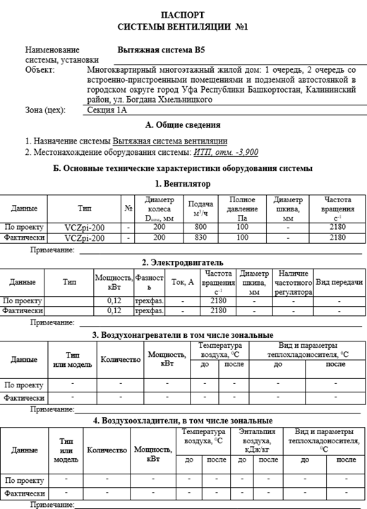
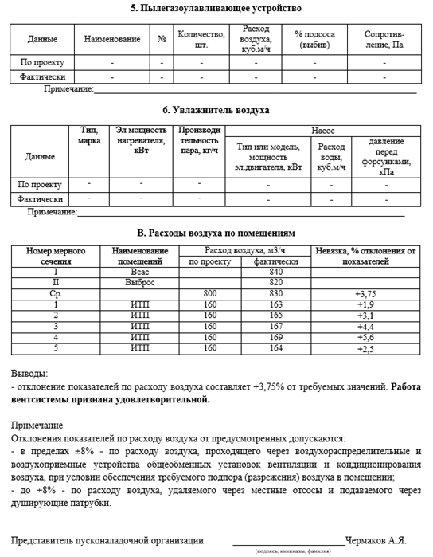
Примечания по оформлению паспорта:
1. Данные по оборудованию (графа проект) берем из листа общих данных рабочей документации (таблица «Характеристика отопительно-вентиляционных систем»).
2. Если проектное и фактическое оборудование отличается, соответственно в графы заносим разные данные.
3. Расходы воздуха измеряются на каждой решетке, клапане, а также на самом вентиляторе (всас, выброс). Номера мерных сечений указываем на схеме системы вентиляции. Наименование помещений берем из плана.
4. Каждая из таблиц паспорта заполняется в том случае, если данное оборудование присутствует. Например, кроме воздухонагревателя может быть воздухоохладитель, или у системы вытяжной вентиляции отсутствует воздухонагреватель и охладитель, а также фильтр.
5. К паспорту прикладывается схема вентиляционной системы, на которой отмечены точки замеров. Данные точки, как правило, проставляются в местах установки воздухораспределительных устройств (решеток, диффузоров). Пример:
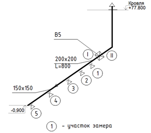
4. Индивидуальные испытания оборудования
Проводятся для проверки работоспособности отдельных элементов системы.
Испытания проводят перед подключением оборудования к другим элементам системы, после монтажа, но до начала комплексных испытаний.
По результатам испытания составляется акт индивидуального испытания оборудования по форме СП 347.1325800.2017 приложение В. Рекомендуется оформлять акт отдельно на каждую систему.
Пример заполнения акта:
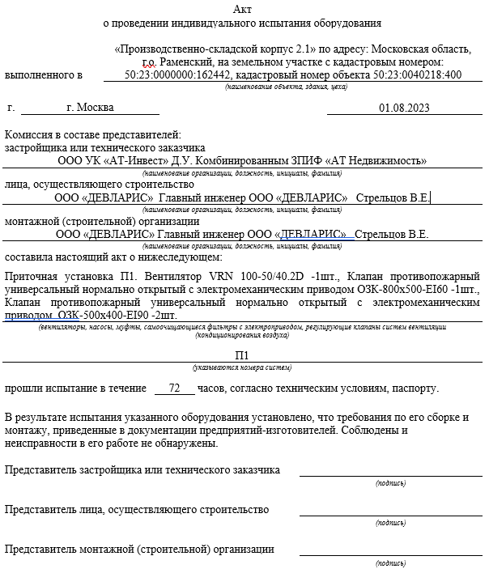
5. Испытания тепловых характеристик
Испытания тепловых характеристик применяются к системам отопления для проверки их способности поддерживать комфортные температурные параметры.
Проверяемые параметры:
- Температура теплоносителя в системах отопления.
- Равномерность нагрева радиаторов.
По результатам испытания оформляется Акт приемки внутренней системы отопления по форме приложения Г СП 347.1325800.2017.
Пример заполнения акта:
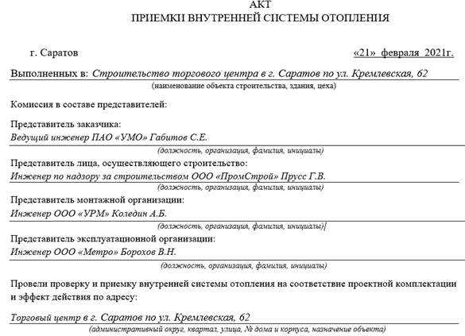
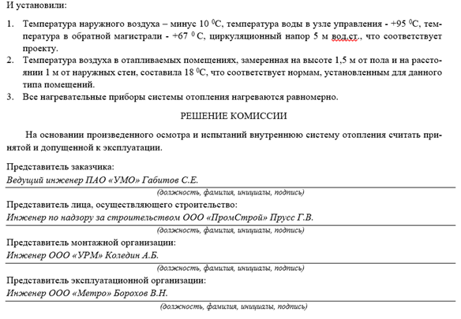
{kind=link}
{kind=link}
{kind=link}
{kind=link}
{kind=link}
{kind=link}
{kind=link}
{kind=link}
{kind=link}
{kind=link}
{kind=link}